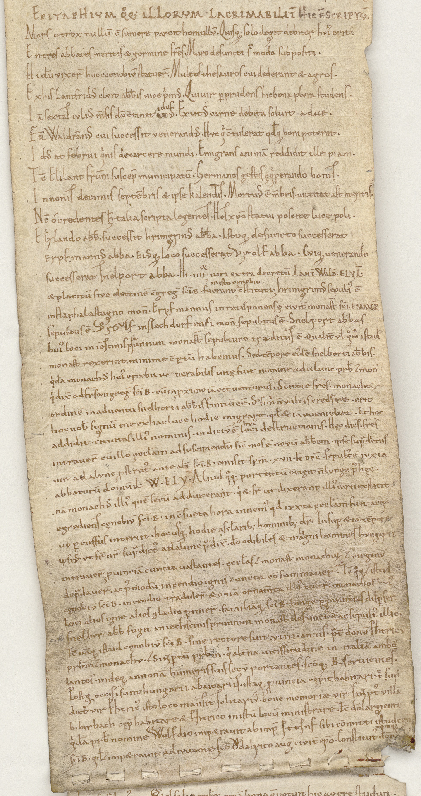

BayHStA, KL Benediktbeuern, 8



Kommentar
Editor: katharina.wolff@textgrid.de
Archiv: BayHStA
Bestand: KL Benediktbeuern
Signatur: 8
Ort: vermutlich Benediktbeuern
Datum: zwischen 1050 und 1070
Schlagwort: Klosterliteralie
Schwierigkeitsgrad: mittel
Kurzbetreff:
Auszug aus der Klostergeschichte Benediktbeuerns
Auszug aus der Klostergeschichte Benediktbeuerns
Schreiberhände:
- unbekannter Schreiber (S1)
Kommentar:
Sogenannter Rotulus historicus mit Traditionen des Klosters Benediktbeuern.
Der aus mehreren Pergamentblättern zusammengesetzte Rotulus enthält auf der Innen- bzw- Vorderseite die Gründungsgeschichte des Klosters sowie Aufzeichnungen über Schenkungen und Schädigungen (z. B. durch die Ungarn) des Klosters. Dabei vereint die Quelle chronikalische Aufzeichnungen und Erzählungen sowie Aufzählungen der Güterverhältnisse und Besitzungen. Auf der Rückseite werden Wohl- huius loci defensor und Übeltäter huius loci destructor namentlich genannt. Hier wurde nur ein Teil des Rotulus ausgewählt und transkribiert.
Bei der von mehreren Händen in diesem Rotulus verwendeten Schrift handelt es sich um eine Minuskelschrift, die besonders bei den Namen wichtiger Personen (z.B. frühere Äbte oder Kaiser) außergewöhnliche Ausgestaltungen aufweist.
Sogenannter Rotulus historicus mit Traditionen des Klosters Benediktbeuern.
Der aus mehreren Pergamentblättern zusammengesetzte Rotulus enthält auf der Innen- bzw- Vorderseite die Gründungsgeschichte des Klosters sowie Aufzeichnungen über Schenkungen und Schädigungen (z. B. durch die Ungarn) des Klosters. Dabei vereint die Quelle chronikalische Aufzeichnungen und Erzählungen sowie Aufzählungen der Güterverhältnisse und Besitzungen. Auf der Rückseite werden Wohl- huius loci defensor und Übeltäter huius loci destructor namentlich genannt. Hier wurde nur ein Teil des Rotulus ausgewählt und transkribiert.
Bei der von mehreren Händen in diesem Rotulus verwendeten Schrift handelt es sich um eine Minuskelschrift, die besonders bei den Namen wichtiger Personen (z.B. frühere Äbte oder Kaiser) außergewöhnliche Ausgestaltungen aufweist.
Entzifferung
(Absatz Beginn)
1 EPITAPHIVM Q(U)OQ(UE) ILLORVM LACRIMABILIT(ER) HIC E(ST) SCRIPTV(M).
2 Mors atrox nullu(m) (con)sumere parcit homullv(m). Quisq(ue) solo degit debitor hvi(us) erit.
3 En tres abbates meritis (et) germine fr(at)res. Muro defuncti s(unt) modo subpositi.
4 Hi du(m) vixer(unt) hoc coenobiv(m) statuer(unt). Multos thesauros cui dederant (et) agros.
5 Ex his Lantfridvsa) elvit abb(at)is uice p(r)imvs. Qui uir p(er) prudens hic bona plvra studens.
6 Ia(m) sextas ivlivs m(en)sis du(m) c(on)tinet vsidus(Über der Zeile nachgetragener Text)b) . Exutvs carne debita soluit adaec).
7 FR(ater) Waldran(n)vs cui successit venerandvs. Hvc q(u)i c(on)tulerat q(uo)dq(ue) boni poterat.
8 Idvs at februi q(u)inis de carcere mundi. Emigrans anima(m) reddidit ille piam.
9 T(un)c Elilant fr(atr)um suscepit municipatu(m). Germanos gestis ęq(u)iperando bonis.
10 In nonis decimis septe(m)bris (et) ipse kalendis. Mortuvs e(st) m(em)bris. uictitat ast meritis.
11 N(e)c(n)o(n) credentes h(ec) talia scripta legentes. Hos xp(ist)o statui poscite luce poli.
12 Elylando abb(ati) successit hrimgrinvs abba(s). Istoq(ue) defuncto successerat
13 Erpfmannvs abba. Eivsq(ue) loco successerat Vrolf abba. Cviq(ue) uenerando
14 successerat Snelport abba. Hi . iiiior. uiri extra decretu(m) LANT(fridi). WALD(rani). ELYL(anti).
15 (et) placitu(m) sive electi(o)ne(m) c(on)greg(ationis) s(an)c(t)i B(enedicti) in isto cenobio fuerant constitutiin isto cenobio(Über der Zeile nachgetragener Text)d) ; hrimgrimvs sepult(us) e(st)
16 in staphalastagno mon(asterio). Erpfmannus in ratisponensę civit(ate) monast(erio) s(an)c(t)i EMMER(AMI)
17 sepultus e(st). Vrolf e) in slechdorfensi mon(asterio) sepultus e(st). Snelport abbas
18 hui(us) loci in iescinisprunnunf) monast(erio) sepulture traditus e(st). Qualit(er) v(e)l q(u)om(od)o istud
19 monast(erium) rexerint. minime (com)p(er)tu(m) habemus. Sed te(m)pore ei(us)de(m) snelborti abb(at)is.
20 q(u)ida(m) monachvs hui(us) cęnobii uenerabilis uitę fuit nomine adalunc pr(es)b(yter) (et) mon(achus)
21 q(u)i dix(it) ad fr(atre)s congreg(ationis) s(an)c(t)i B(enedicti). cu(m) in p(ro)ximo ia(m) e(ss)et uenturus. Scitote f(rat)res. monacho(rum)
22 ordine(m) in aduentu snelborti abb(at)is finitu(m) e(ss)e. S(ed) si m(ih)i n(on) vultis credie(Über der Zeile nachgetragener Text)reg) . erit
23 hoc uob(is) signu(m) me ex hac luce hodie migrare. q(uo)d (et)ia(m) eueniebat. Et hoc
24 addidit. cituitash) illi(us) nominis. indiciv(m) e(st) locihuius(Über der Zeile nachgetragener Text)i) destructionis. Hęc dic(en)s fr(atr)es
25 intrauer(unt) cu(m) illo ęccl(esi)am ad suscipiendu(m) sic(ut) mos e(st) novu(m) abb(at)em. ipse sup(ra)dictus
26 uir adalvnc p(ro)strat(us) ante alt(arem) s(an)c(t)i B(enedicti). emisit sp(iritu)m .xvii. k(alendas) Dec(embris) sepult(us) e(st) ivxta
27 abbatoru(m) domu(m) .L(ANTFRIDI). W(ALTRANI). ELY(LANTI). Aliud q(u)oq(ue) portentu(m) c(on)tigit n(on) longe P(ost) hęc.
28 na(m) monachvs illi(us) que(m) secu(m) adduxerantj) . q(u)i (et) f(rate)r ut dixerant illi(us) carn(is) exstitit.
29 egrediens cęnobiv(m) s(an)c(t)i B(enedicti) in c(on)sueta hora in nem(us) q(uo)d ivxta ęccl(esi)am fuit a cer
30 uo p(er)cussus interiit. hoc usq(ue) hodie a s(e)c(u)larib(us) hominib(us) d(icitu)r Insup(er) (et)ia(m) te(m)pore
31 ipsivs. vt f(rate)r n(oste)r sup(ra)dict(us) adalunc p(rae)dix(it). d(e)o odibiles (et) magnili(Über der Zeile nachgetragener Text)k) homines hvngarii
32 intrauer(unt) p(ro)uincia(m) cuncta uastantes. ęccl(esi)as (et) monast(eria) monacho(rum) (et) virginv(m)
33 dep(rae)dauer(unt). ac p(ost)modu(m) incendio ignis cuncta co(n)summauer(unt). T(un)c q(u)oq(ue) (et) istud
34 cęnobiv(m) s(an)c(t)i B(enedicti). incendio tradider(unt) (et) o(m)nia ornam(en)ta illi(us) tuler(unt). monachos hvi(us)
35 loci alios igne alios gladio p(er)imer(unt) familia(m)q(ue) s(an)c(t)i B(enedicti). longe p(er) p(ro)uincias disp(er)ser(unt).
36 Snelbor abb(as) fugit in iechscinisprunnun monast(erium) defunct(us) e(st) ac sepult(us) illic.
37 T(un)c na(m)q(ue) istud cęnobiv(m) s(an)c(t)i B(enedicti). sine rectore fuit .viiii. annis. p(rae)t(er) do(mi)nv(m) P(er)htricv(m)
38 pr(es)b(yteru)m (et) monachv(m). (et) Sintp(er)tu(m) pr(es)b(yteru)m q(u)i alt(er)na uicissitudine in italia(m) ambou(Über der Zeile nachgetragener Text)
39 lantesl) . indeq(ue) annona(m) humeris suis secv(m) portantes. s(an)c(t)oq(ue). B(enedicto). seruientes.
40 Postq(uam) occisi sunt hungarii a baioariis. istaq(ue) p(ro)uincia cępit habitari. t(un)c sup(ra)
41 dict(us) vir P(er)htric(us) isto loco mansit solitarivs. bone memoriae vir sintp(er)t(us) villa(m)
42 bibirbach cęp(it) habitare (et) P(er)htrico in istu(m) locu(m) ministrare. T(un)c d(e)o largiente
43 q(u)ida(m) pr(es)b(yter) nomine Wolfdio imp(et)rauit ab imp(eratore) OttonEm) sibi co(m)mitti istud cen(obium)
44 s(an)c(t)i B(enedicti). q(uo)d (et) imp(et)rauit adivuante s(an)c(t)o dalrico aug(ustanae) civit(atis) ep(iscop)o. Constitut(us) namq(ue)(Über der Zeile nachgetragener Text)n) do(mi)nv(s) hv(ius)
(Absatz Ende)
a) Sonderform der "-us"(Textzitat)-Ligatur; diese tritt öfter auf, z.B. in der gleichen Zeile bei "primus"(Textzitat)
b) "Idus"(Textzitat) über einen anderen Begriff, von dem nur noch die "-us"(Textzitat)-Kürzung erkennbar ist, übergeschrieben
c) der Buchstabe nach dem "d"(Textzitat) muss ein sog. "offenes a" sein
d) "in isto cenobio"(Textzitat) wurde über "fuerant constituti"(Textzitat) geschrieben
e) sehr exaltierte Auszeichnungsschrift
f) das "r"(Textzitat) in ungewöhnlicher Form wurde vermutlich später eingefügt
g) zuerst "credire"(Textzitat), dann mit überschriebenem "e"(Textzitat) nach "credere"(Textzitat) verbessert, das "i"(Textzitat) durch Punktierung ungültig gemacht
h) fehlerhafte Schreibweise, soll "ciuitas"(Textzitat) heißen
i) "huius"(Textzitat) wurde über "loci"(Textzitat) geschrieben
j) das "n"(Textzitat) durch Punktierung ungültig gemacht
k) von den großen zu den bösen Ungarn: zuerst wurde "magni"(Textzitat) geschrieben, dann durch Überschreiben der Buchstaben "li"(Textzitat) zu "maligni"(Textzitat) verbessert
l) "u"(Textzitat) verbessert aus "o"(Textzitat)
m) ungewöhnliche Schreibweise des kaiserl. Namens mit vermutl. "E"(Textzitat) am Ende; möglicherweise wurde diese Schreibung vom Herrschermonogramm Ottos aus einer Urkunde inspiriert?
n) über der Zeile
Transkription
(Absatz Beginn)
1 EPITAPHIUM QUOQUE ILLORUM LACRIMABILITER HIC EST SCRIPTUM.
2 Mors atrox nullum est sumere parcit homullum. Quisque solo degit debitor huius erit.
3 En tres abbates meritis et germine fratres. Muro defuncti sunt modo subpositi.
4 Hi dum vixerunt hoc coenobium statuerunt. Multos thesauros cui dederant et agros.
5 Ex his Lantfridusa) eluit abbatis vice primus. Qui vir per prudens hic bona plura studens.
6 Iam sextas Iulius mensis dum continet idusb) . Exutus carne debita soluit Adaec) .
7 Frater Waldrannus cui successit venerandus. Huc qui contulerat quodque boni poterat.
8 Idus at februi quinis de carcere mundi. Emigrans animam reddidit ille piam.
9 Tunc Elilant fratrum suscepit municipatum. Germanos gestis ęquiperando bonis.
10 In nonis decimis septembris et ipse kalendis. Mortuus est membris. victitat ast meritis.
11 Necnon credentes hec talia scripta legentes. Hos Christo statui poscite luce poli.
12 Elylando abbati successit Hrimgrinus abba. Istoque defuncto successerat
13 Erpfmannus abba. Eiusque loco successerat Urolf abba. Cuique venerando
14 successerat Snelport abba. Hi .iiiior. viri extra decretum Lantfridi, Waldrani, Elylanti
15 et placitum sive electionem congregationis sancti Benedicti in isto cenobio fuerant constitutid) : Hrimgrimus sepultus est
16 in Staphalastagno monasterio. Erpfmannus in Ratisponensę civitatis monasterio sancti Emmerami
17 sepultus est. Urolfe) in Slechdorfensi monasterio sepultus est. Snelport abbas
18 huius loci in Iescinisprunnunf) monasterio sepulture traditus est. Qualiter vel quomodo istud
19 monasterium rexerint minime compertum habemus. Sed tempore eiusdem Snelborti abbatis
20 quidam monachus huius cęnobii venerabilis vitę fuit nomine Adalunc presbyter et monachus
21 qui dixit ad fratres congregationis sancti Benedicti cum in proximo iam esset venturus: Scitote fratres monachorum
22 ordinem in adventu Snelborti abbatis finitum esse. Sed si mihi non vultis credereg) , erit
23 hoc vobis signum me ex hac luce hodie migrare. Quod etiam eveniebat. Et hoc
24 addidit citvitash) : illius nominis indicium est huius locii) destructionis. Hęc dicens fratres
25 intraverunt cum illo ęcclesiam ad suscipiendum sicut mos est novum abbatem. Ipse supradictus
26 vir Adalunc prostratus ante altarem sancti Benedicti emisit sp(iritu)m XVII kalendas decembris. Sepultus est iuxta
27 abbatorum dominorum Lantfridi, Waltrani, Elylanti. Aliud quoque portentum contigit non longe post hęc.
28 Nam monachus illius quem secum adduxerantj) , qui et frater ut dixerant illius carnis exstitit.
29 egrediens cęnobium sancti Benedicti in consueta hora in nemus quod iuxta ęcclesiam fuit a cer-
30 vo percussus interiit. Hoc usque hodie a secularibus hominibus dicitur. Insuper etiam tempore
31 ipsius, ut frater noster supradictus Adalunc praedixit, deo odibiles et malignik) homines Hungarii
32 intrauerunt provinciam cuncta vastantes ęcclesias et monasteria monachorum et virginum
33 depraedaverunt ac postmodum incendio ignis cuncta consummaverunt. Tunc quoque et istud
34 cęnobium sancti Benedicti incendio tradiderunt et omnia ornamenta illius tulerunt. Monachos huius
35 loci alios igne alios gladio perimerunt familiamque sancti Benedicti. longe per provincias disperserunt
36 Snelbor abbas fugit in Iechscinisprunnun monasterium. Defunctus est ac sepultus illic.
37 Tunc namque istud cęnobium sancti Benedicti. sine rectore fuit VIIII annis, praeter dominum Perhtricum
38 presbyterum et monachum. et Sintpertum presbyterum qui alterna vicissitudine in italiam ambu-
39 lantesl) indeque annonam humeris suis secum portantes sanctoque Benedicto servientes.
40 Postquam occisi sunt Hungarii a Baioariis istaque provincia cępit habitari. Tunc supra-
41 dictus vir Perhtricus isto loco mansit solitarius. Bone memoriae vir Sintpertus villam
42 Bibirbach cępit habitare et Perhtrico in istum locum ministrare. Tunc deo largiente
43 quidam presbyter nomine Wolfdio impetravit ab imperatore Ottonem) sibi committi istud cenobium
44 sancti Benedicti, quod et impetravit adiuvante sancto O%udalrico Augustanae civitatis episcopo. Constitutus namquen) dominus huius
(Absatz Ende)
a) Sonderform der "-us"(Textzitat)-Ligatur; diese tritt öfter auf, z.B. in der gleichen Zeile bei "primus"(Textzitat)
b) "Idus"(Textzitat) über einen anderen Begriff, von dem nur noch die "-us"(Textzitat)-Kürzung erkennbar ist, übergeschrieben
c) der Buchstabe nach dem "d"(Textzitat) muss ein sog. "offenes a" sein
d) "in isto cenobio"(Textzitat) wurde über "fuerant constituti"(Textzitat) geschrieben
e) sehr exaltierte Auszeichnungsschrift
f) das "r"(Textzitat) in ungewöhnlicher Form wurde vermutlich später eingefügt
g) zuerst "credire"(Textzitat), dann mit überschriebenem "e"(Textzitat) nach "credere"(Textzitat) verbessert, das "i"(Textzitat) durch Punktierung ungültig gemacht
h) fehlerhafte Schreibweise, soll "ciuitas"(Textzitat) heißen
i) "huius"(Textzitat) wurde über "loci"(Textzitat) geschrieben
j) das "n"(Textzitat) durch Punktierung ungültig gemacht
k) von den großen zu den bösen Ungarn: zuerst wurde "magni"(Textzitat) geschrieben, dann durch Überschreiben der Buchstaben "li"(Textzitat) zu "maligni"(Textzitat) verbessert
l) "u"(Textzitat) verbessert aus "o"(Textzitat)
m) ungewöhnliche Schreibweise des kaiserl. Namens mit vermutl. "E"(Textzitat) am Ende; möglicherweise wurde diese Schreibung vom Herrschermonogramm Ottos aus einer Urkunde inspiriert?
n) über der Zeile